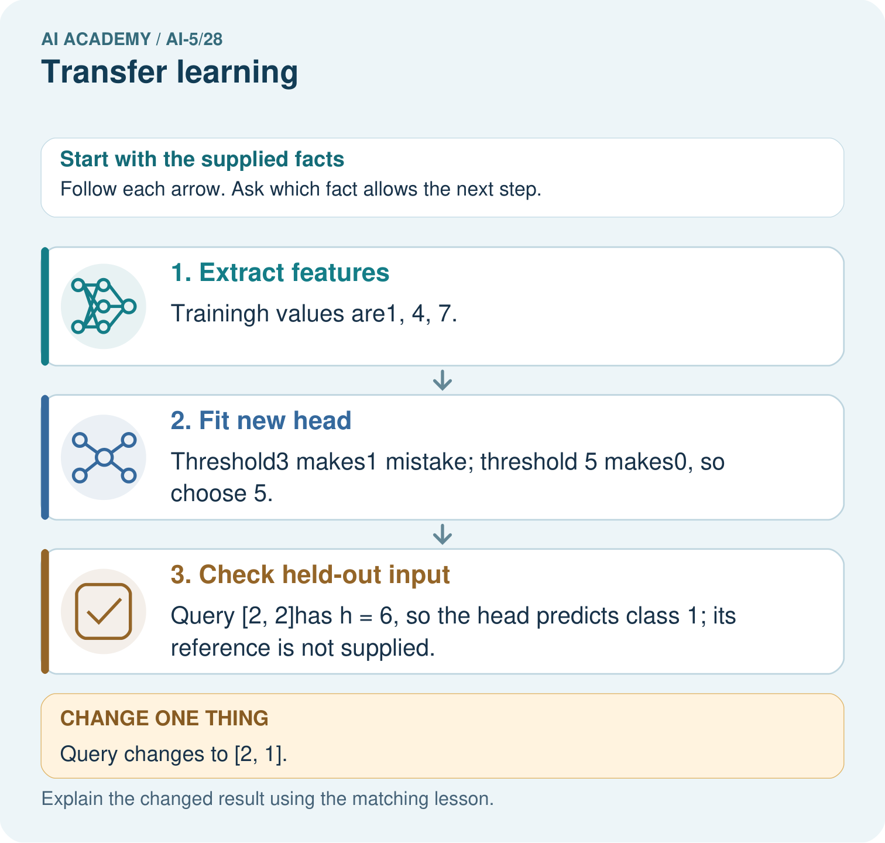

AI Academy · Level 5 · Grade 10 · Week 28 · Teacher guide
Transfer learning
Learn to understand, design, build, test and explain AI systems responsibly.
Project: Image-pattern Network Investigation
Teacher guide · 1 of 6
Prepare the purpose, prerequisites and materials
Teach the learning cycle
Primary target: Trace a reused feature extractor and a newly fitted output head
| Session | Sequence and minutes | Resources |
|---|---|---|
| Session 1 · Understand · 45 min | 0–7: recall and prerequisite; 7–15: inspect the concrete case and predict; 15–30: teacher models the worked trace; 30–40: learners explain a step using the text and visual; 40–45: check the core idea. | Sections 1–6; record the brief recall in the workbook. |
| Session 2 · Practise · 45 min | 0–5: retrieve the procedure; 5–15: W2 completion practice; 15–23: explain and check with a partner; 23–30: each learner answers the misconception check; 30–40: targeted reteaching or a harder variation; 40–45: prepare the investigation. | Sections 7–10; use the matching workbook W2 and misconception check. |
| Session 3 · Investigate and transfer · 45 min | 0–5: retrieve the decision rule; 5–20: investigate or trace; 20–30: start the independent case; 30–38: connect the project; 38–43: act on feedback; 43–45: plan the return check. | Sections 9 and 11–14. Give extra time to finish the full task set; use Section 15 when the week includes a coding lab. |
This is a starting allocation of 135 minutes, not a validated duration. Preserve all named topics. Schedule extra time for connected examples, the full investigation, independent cases and project building. Repeated copies of a case share one recorded attempt; they are not new evidence.
Retrieval answer guidance
Similarity and normalisation
Without opening the old lesson, explain one key idea from Similarity and normalisation. Give an example and a mistake that the idea helps you avoid.
Look for: Calculate vector length and normalise a nonzero vector
Reference example, not the only acceptable wording: Teacher explanation: Lengths are 5, 10 and 5. Unit vectors are [0.6, 0.8], [0.6, 0.8] and [-0.6, -0.8]. The length difference between Q and A disappears; the opposite direction of C is preserved.
Sequence representations
Without opening the old lesson, explain one key idea from Sequence representations. Give an example and a mistake that the idea helps you avoid.
Look for: Encode an ordered sequence with an explicit vocabulary
Reference example, not the only acceptable wording: Teacher explanation: IDs are [2, 3, 4, 0], mask [1, 1, 1, 0], real length 3 and final real event STOP at position 2.
Pooling and spatial information
Without opening the old lesson, explain one key idea from Pooling and spatial information. Give an example and a mistake that the idea helps you avoid.
Look for: Compute max and mean pooling under an explicit window rule
Reference example, not the only acceptable wording: Teacher explanation: Values are 1, 3, 2 and 7. Sum is 13, maximum 7 and mean 3.25. Each pooled output has shape 2 by 2.
Use two 45-minute sessions. Keep three claims separate: real transfer reuses previously learned knowledge; this supplied extractor is a transparent stand-in; the reported scores concern tiny constructed target examples. No external model, student account or personal dataset is needed. Require students to mark frozen versus fitted quantities before computing.
Outcomes
Trace a reused feature extractor and a newly fitted output head
Fit a small target-task head using training data and compare a baseline
Identify when a frozen representation cannot support a new task
Preparation
Printed lesson and workbook; paper and pencil
Calculator and optional local Python 3 editor; no packages or AI accounts needed
Use the fictional examples supplied; prepare the fresh retry before class
Prerequisite answer
No. Identical inputs to a fixed deterministic head produce identical outputs. Information lost by the representation cannot be recovered from that representation alone.
End goal for the pictorial case
By the end, I can explain transfer learning using a traced example and a stated limitation.
This added worked case illustrates the week’s main idea. Retain all original and connected topics; schedule its practice within the teaching cycle.
Teacher guide · 2 of 6
Explain and model the mechanism
A source model may learn useful features before we have many labels for a new target task. Transfer learning reuses those learned features or parameters. One approach freezes the feature extractor and fits a new output head. Fine tuning instead updates some or all of the reused parameters, usually together with the head.
Use a transparent stand-in for a source-trained extractor: f(x) = ReLU(x1 + x2), with supplied weights [1, 1] and bias 0. ReLU keeps a positive value and replaces a negative value with zero. Here x1 and x2 are nonnegative fictional event counts, so f(x) is their sum. We did not train this extractor on a source dataset; this exercise demonstrates the mechanics of reuse, not measured transfer benefits.
The target is a high-activity label. The extractor returns a single number h, not a class label or probability. A new head converts h into the target prediction.
Use target training records T1 [1, 1] with label 0, T2 [1, 3] with label 0, T3 [4, 2] with label 1 and T4 [5, 3] with label 1. Their extracted values are 2, 4, 6 and 8. Fit the head by trying thresholds 3, 5 and 7 and counting training mistakes. Fitting can use a small search; it need not use gradients.
The tie rule prefers the smaller threshold if training mistake counts match; there is no tie here. The extractor remains unchanged. The code assumes finite numeric counts and valid binary labels. A constant baseline predicts the most frequent training label; with two of each, our declared tie rule chooses 0.
| Term | Meaning |
|---|---|
| Transfer learning | Reusing knowledge learned on a source task or dataset to help a target task |
| Feature extractor | The part of a model that maps an input to a representation |
| Output head | The part that maps a representation to the current task’s output |
| Fine tuning | Training some or all previously learned parameters on the target task |
Freeze the fitted head before validation
Guided: h = 5 and prediction is 1 because equality is included. The threshold was fitted; weights [1, 1] and bias 0 stayed frozen. Exit: two constructed validation cases provide limited evidence, the extractor was supplied rather than source-trained here, and no from-scratch comparison was run. Compare both methods on the same target cases with a declared training budget and untouched final evaluation after all choices.
Model the reasoning aloud
Use the complete worked example below before asking learners to complete W2. Reveal a small part, invite a prediction, then explain the deciding step. These teacher notes contain solutions; do not reveal the independent case answer during modelling.
Freeze the fitted head before validation
Use the same validation records for both methods. These records were not used to fit the threshold. If validation guides later choices, reserve separate untouched final evaluation data. We have not compared with a full model trained from scratch or measured training time, so this result cannot establish either advantage.
| Thinking move | Teacher prompt |
|---|---|
| Plan | What is given? What is the question? Which procedure fits these facts? |
| Do | Point to each input and intermediate step in the worked trace. Name the rule that allows the next step. |
| Check | Does the output answer the question? Which assumption or limitation prevents a larger claim? |
Use the diagram and verbal explanation together. Ask learners to match a sentence to a specific visual step; do not assign learners fixed visual or auditory learning styles.
A pictorial worked case: Transfer learning
Transfer a fixed feature extractor while identifying what is actually refitted.
The facts we will use
Frozen extractorh=left+2right. New-task training inputs [1, 0]label0,[2, 1]label0,[1, 3]label1. Class1 whenh>=threshold; candidates3 or5.
All inputs and outcomes in this worked example are invented classroom data; no real model run is claimed.

Read the picture one step at a time
Why this result follows
Transfer learning can keep a representation fixed while fitting a smaller output head for a new task. Here the extractor always applies the same weights, while new labels choose the head’s threshold. Applying the chosen head to a query is inference. State which part was frozen and which was fitted; this arithmetic does not establish the extractor is useful for every task.
What this example does not establish
A frozen extractor can miss task-specific distinctions; transfer is a strategy requiring validation, not a guarantee of useful features.
Change one thing in the pictured case
Change: Query changes to [2, 1].
Prediction: Its h becomes4 and the fitted head predicts class 0.
Reason: Extractor stays fixed; the changed input crosses the chosen head’s boundary.
Ask while showing the picture
Cover the result. Ask learners to name the inputs and predict the next step. Uncover one step, connect the icon to the actual procedure, and explain its evidence. Then change the supplied condition and compare. The picture is a representation; it does not document execution of a real AI model.
Teacher guide · 3 of 6
Demonstrate and guide practice
| Time or stage | Teacher action |
|---|---|
| Session 1 start to 7 minutes | Retrieve the collision principle: a head cannot reconstruct distinctions absent from its input. |
| 7 to 18 minutes | Trace the input, extractor and head. Complete W1 and label frozen weights and fitted threshold. |
| 18 to 32 minutes | Count training mistakes for each threshold. Trace the optional code and declared tie rule. |
| 32 to 45 minutes | Use the validation visual and W2 to compare with the constant baseline on identical records. |
| Session 2 start to 8 minutes | Complete the guided boundary example and check equality at the threshold. |
| 8 to 20 minutes | Use W3 to expose the new-task collision. Distinguish a hand-chosen repair from fine tuning. |
| 20 to 35 minutes | Collect W4 independently; require the training tie and its declared resolution before validation. |
| 35 to 45 minutes | Use W5 and the exit response to audit evidence. Give feedback, then administer the fresh retry. |
Use the worked example in Sections 3 and 6. Collect a prediction before revealing its result; ask the learner to point to each intermediate fact.
Provide separate input, feature, threshold and prediction boxes. Allow calculators and mark frozen parameters with a lock symbol on the board. Extension: on U and V, consider thresholds at or below 4 and thresholds above 4; show that neither case classifies both correctly. Discuss why source performance does not establish target suitability.
Reduce help deliberately
Completion task: For the four target training records, give the number of mistakes at thresholds 3, 5 and 7 and choose the fitted threshold. Then score that head and the declared constant baseline on V1 and V2. Explain which data fitted the head.
Teacher check: Teacher explanation: Training mistake counts are 1, 0 and 1, selecting threshold 5. Validation predictions are 0 and 1, so the head scores 2 of 2. The constant-0 baseline scores 1 of 2. Only T1 through T4 fit the head; validation evaluates the fitted choice.
Start by identifying the given inputs together. Leave the intermediate steps blank. If needed, model one step, then withdraw that help on the next step. Move to a full trace only when the partial trace is understood. For partners, alternate explainer and checker; collect a response from every learner before discussion.
Individual reasoning check
Use the worked case for Transfer learning. Proposed explanation: “Frozen means the whole model cannot learn”. Decide whether this explanation is supported. Point to the step or supplied fact that decides; explain your repair if needed.
Expected correction: The extractor stays fixed while the new head is fitted on target training examples.
Collect explanations, not only yes/no votes. If a misunderstanding is common, re-model the relevant step for the class. If it affects a few learners, give a short targeted group explanation while others solve a more demanding variation.
Pictorial practice question
Which part was trained for the new task? Point to the relevant step in the picture, then write the changed result and the rule or evidence that supports it.
Reasoned teacher answer
Only the threshold head was selected from the new training labels. The declared extractor weights [1, 2] were frozen. Changed-case check: Its h becomes4 and the fitted head predicts class 0. Extractor stays fixed; the changed input crosses the chosen head’s boundary.
Changed-case reasoning: Its h becomes4 and the fitted head predicts class 0. Extractor stays fixed; the changed input crosses the chosen head’s boundary.
Collect each learner’s explanation before discussion. Use the first missing connection between input, deciding step and result to choose support. This question is worked-case practice, not fresh mastery evidence.
Teacher guide · 4 of 6
Run the investigation and diagnose misconceptions
Frozen means the whole model cannot learn: The extractor stays fixed while the new head is fitted on target training examples.
A larger head can undo any lost information: Identical representations remain indistinguishable to a fixed deterministic head, regardless of its size.
Transfer guarantees better or faster results: The source representation may not suit the target. Accuracy and resource benefits require fair measured comparisons.
Use Section 9 for the evidence ledger. Add a boundary or missing-input case and record the expected response before checking. More successful repeats of one case do not establish wider coverage.
Match the support to the first error
| What the response shows | Next teaching action |
|---|---|
| Missing or misread facts | Read the case aloud, mark supplied versus unknown facts, and let the learner restate it. |
| Wrong procedure | Return to the deciding step in the worked case. Contrast it with the proposed incorrect explanation. |
| Arithmetic or implementation error | Trace intermediate values or lines; preserve the first mismatch and retry that step. |
| Correct result without a reason | Ask for a trace and a changed case before marking independent understanding. |
| An unsupported wider claim | Ask which supplied evidence supports the claim and which further observation would be needed. |
Offer an oral explanation, drawing, enlarged visual or fewer examples when that removes a reading/writing barrier. Keep the same reasoning goal. Stretch secure learners by changing a boundary or assumption and asking them to defend the effect, not simply by assigning more of the same questions.
Teacher guide · 5 of 6
Assess and explain the answers
Guided and exit questions
Guided: h = 5 and prediction is 1 because equality is included. The threshold was fitted; weights [1, 1] and bias 0 stayed frozen. Exit: two constructed validation cases provide limited evidence, the extractor was supplied rather than source-trained here, and no from-scratch comparison was run. Compare both methods on the same target cases with a declared training budget and untouched final evaluation after all choices.
W1 Trace the reused pipeline
For input [4, 2], compute h using the original extractor and the class at threshold 5. Identify the frozen weights and bias, the fitted quantity, and why h is not a probability.
Teacher explanation: The extractor gives h = 6 and the head predicts 1. Weights [1, 1] and bias 0 stay frozen; only the threshold is fitted. h is a nonnegative sum of counts, with no probability mapping or calibration.
W2 Fit and compare
For the four target training records, give the number of mistakes at thresholds 3, 5 and 7 and choose the fitted threshold. Then score that head and the declared constant baseline on V1 and V2. Explain which data fitted the head.
Teacher explanation: Training mistake counts are 1, 0 and 1, selecting threshold 5. Validation predictions are 0 and 1, so the head scores 2 of 2. The constant-0 baseline scores 1 of 2. Only T1 through T4 fit the head; validation evaluates the fitted choice.
W3 Diagnose a lost distinction
For the first-count-greater target, explain why the original extractor cannot distinguish U [1, 3] from V [3, 1]. Trace the hand-chosen [1, -1] extractor and threshold 1. Does this show that fine tuning has been trained and independently validated?
Teacher explanation: Both original features are 4, so a deterministic head must give the same answer despite labels 0 and 1. The changed features are 0 and 2, giving predictions 0 and 1. This is a hand-chosen change on the examples being inspected, not training or independent validation.
W4 Fit a new head independently
A separate frozen extractor is h = 2*x1 + x2. Training inputs [1, 0], [1, 2], [2, 1], [3, 1] have labels 0, 0, 1, 1. Compare thresholds 2, 4 and 6 using prediction 1 when h >= threshold; choose the fewest mistakes, breaking ties toward the smaller threshold. Score it on validation [2, 0] with label 1 and [0, 2] with label 0. Compare with the training-majority baseline, whose tie rule chooses 0.
Teacher explanation: Training features are 2, 4, 5 and 7. Mistakes at thresholds 2, 4 and 6 are 2, 1 and 1, so the tie rule selects 4. Validation features are 4 and 2, predictions 1 and 0, scoring 2 of 2. The constant-0 baseline scores 1 of 2. Equality at threshold 4 gives class 1.
W5 Plan credible evidence
A report omits the source checkpoint and preprocessing, claims faster learning without timing, and repeatedly chooses settings using the final evaluation set. Name the missing records and propose a fair comparison with a model trained from scratch.
Teacher explanation: Record source version, provenance and permitted use, preprocessing, frozen/trainable parts, splits, baseline and resource budget. Measure time or computation before claiming speed. Use training/validation for choices and new untouched final evaluation after repeated final-set tuning, or report that independent evidence is unavailable. Compare both methods on the same target cases and declared budget.
Independent assessment and fresh retry
W4 requires features 2, 4, 5, 7; mistake counts 2, 1, 1; tie-selected threshold 4; and validation scores 2 of 2 versus 1 of 2. Fresh retry: frozen h = x1 + 2*x2; training inputs [0, 1], [2, 1], [1, 2], [1, 3], labels 0, 0, 1, 1. Thresholds 2, 4, 6 again give 2, 1, 1 mistakes, selecting 4. Validation [0, 2] label 1 and [2, 0] label 0 yield features 4 and 2 and both correct; constant 0 gets one correct. Ask which parameter was fitted.
Assess independent transfer
Selected case: A separate frozen extractor is h = 2*x1 + x2. Training inputs [1, 0], [1, 2], [2, 1], [3, 1] have labels 0, 0, 1, 1. Compare thresholds 2, 4 and 6 using prediction 1 when h >= threshold; choose the fewest mistakes, breaking ties toward the smaller threshold. Score it on validation [2, 0] with label 1 and [0, 2] with label 0. Compare with the training-majority baseline, whose tie rule chooses 0.
Selected case answer
Teacher explanation: Training features are 2, 4, 5 and 7. Mistakes at thresholds 2, 4 and 6 are 2, 1 and 1, so the tie rule selects 4. Validation features are 4 and 2, predictions 1 and 0, scoring 2 of 2. The constant-0 baseline scores 1 of 2. Equality at threshold 4 gives class 1.
| Dimension | Evidence required |
|---|---|
| Explanation | Names the applicable idea or procedure and ties it to the supplied facts. |
| Trace and result | Preserves the given inputs and shows the relevant intermediate steps; distinguishes a prediction from an observed execution. |
| Limits | States the assumptions, missing evidence or conditions under which the result would change. |
Record each dimension as not yet, with support, or independent. Accept a valid alternative procedure with a defensible trace. Do not penalise an honestly recorded model failure if the learner correctly explains its evidence and limits.
Feedback that the learner uses
Name the earliest unsupported step and give one action to repair it. Have the learner make that repair now and explain why. Then assess the relevant skill on a fresh, fully specified case. Confirm it was not previously practised with feedback; solve and check the new case before assigning it. A follow-up design prompt is a starting brief, not automatically an equivalent test.
Teacher guide · 6 of 6
Connect the project, support and next lesson
Add a labelled transfer learning evidence sheet to Image-pattern Network Investigation. Show how you can trace a reused feature extractor and a newly fitted output head. Use the supplied fictional case and keep its inputs, intermediate steps, calculation or prediction, and limitation. Connect this record to last week’s record; a matching answer without a trace is insufficient.
Provide separate input, feature, threshold and prediction boxes. Allow calculators and mark frozen parameters with a lock symbol on the board. Extension: on U and V, consider thresholds at or below 4 and thresholds above 4; show that neither case classifies both correctly. Discuss why source performance does not establish target suitability.
Week 29 studies uncertainty and failure analysis, using specific errors and limitations rather than assuming a confident output is correct.
Retain the project ledger and assess a changed case after support. Check the relevant prerequisite before carrying this component forward.
Plan the delayed return
Suggested return points in this level: ai-5/29, ai-5/31, ai-5/34. Use actual classroom dates, adjusting for holidays and gaps. One, three and six teaching weeks are scheduling choices, not a claimed optimal spacing.
At a delayed check, ask for the idea from memory and a changed application. Compare with the earlier independent response and record support used. For a new level, revisit the previous capstone before checking the new prerequisites.
| Record | Teacher evidence |
|---|---|
| Learner code and date | |
| Concept and case used; prior exposure | |
| Explanation / trace / limits | |
| Support and first repair | |
| Changed case and delayed outcome | |
| Next teaching action |
Use the evidence to choose reteaching or the next step. A completed page, confidence rating or attractive project does not by itself demonstrate understanding.
Project evidence from this case
For your Image-pattern Network Investigation, save the input, procedure, observed result and limitation of this check. Label this worked example as practice; use a different, previously unreviewed case when checking independent understanding.